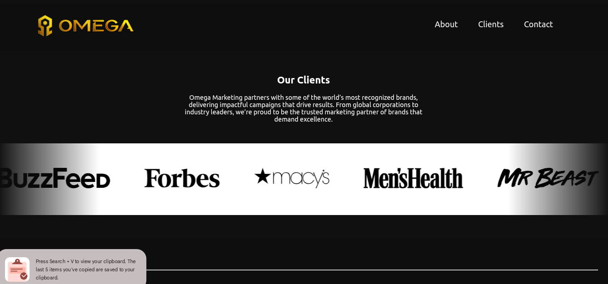
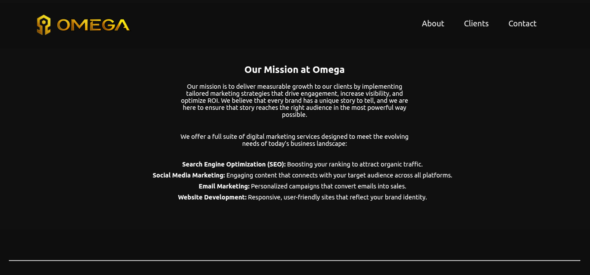
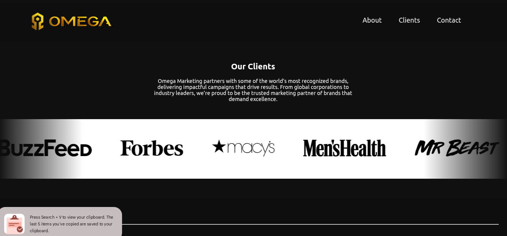
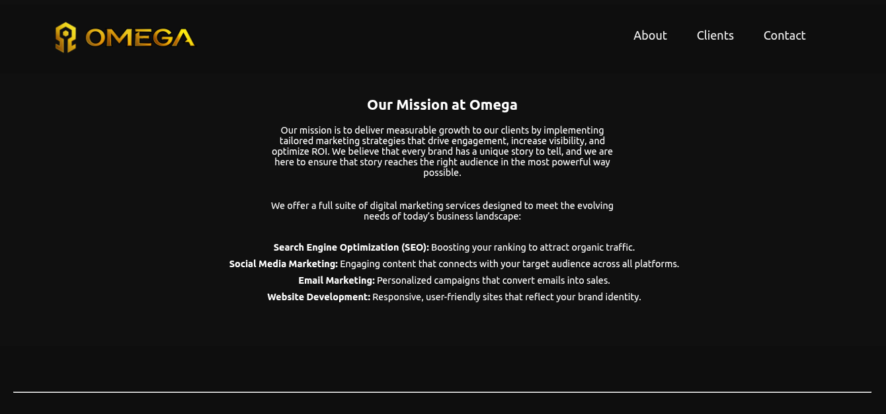

Work Samples
Sample 1: Jesse James Riding Stables
Trait Highlight: Accountability
Context: I work at Jesse James Riding Stables, and was 'rented out' to Raven's Cross for Halloween.
This is a picture of the me riding a horse for Raven's Cross Haunted House. This job has taught me how to work for extended periods of time in uncomfortable conditions. I'm not allowed to get off of the horse until every guest has been through. We start letting people in at 6, and stop selling tickets at 11. But, nearing the end of October, it's usually three in the morning before everyone has been through. Through this role I demonstrate accountability by showing up daily, no matter how hard it is.
Sample 2: Taco Bell
Trait Highlight: Initiative, Skill/Knowledge
Working at Taco Bell has taught me both how to work effectively with a team, and in a fast paced environment. Every other job I have worked has been slow paced, or I have to get certain things done by a deadline, which is usually weeks away. At Taco Bell, I have to start making orders before the customer even pays, ensuring their food is brought to them as fast as possible. Through this role, I demonstrate initiative by showing up daily, and knowledge, through my memorization of different procedures (properly cleaning the grill, operating the cash register, etc)
 



Sample 3: Local Business Website
Trait Highlight: Skill/Knowledge
This website was completed in November 2024, as part of an assignment to create a website for a local business. This project taught me how to properly pace myself when facing deadlines. View Site